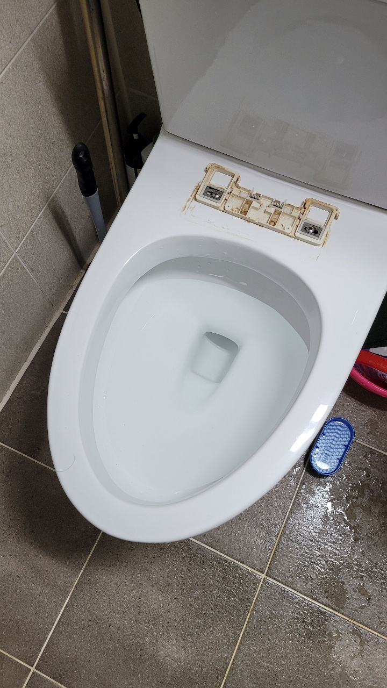
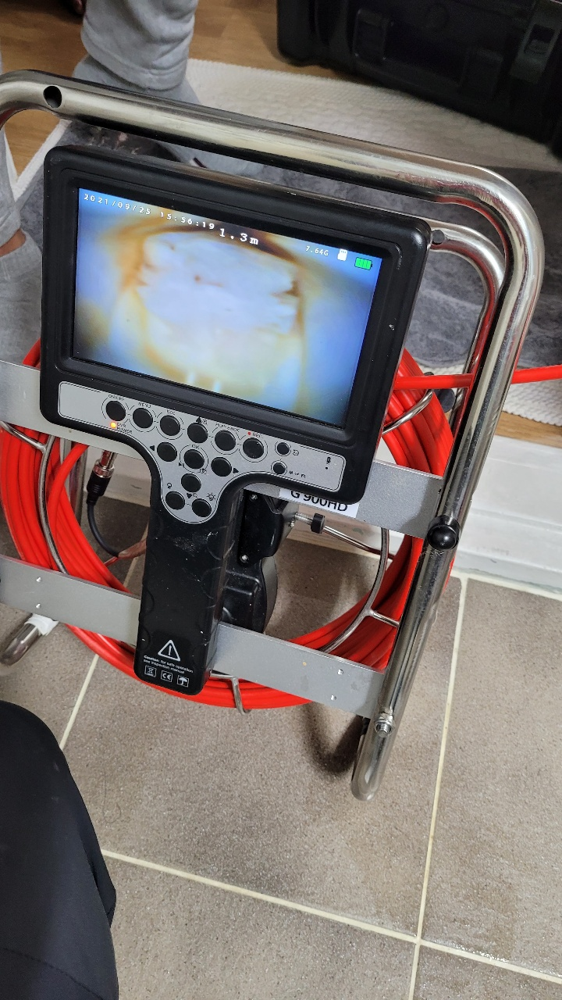
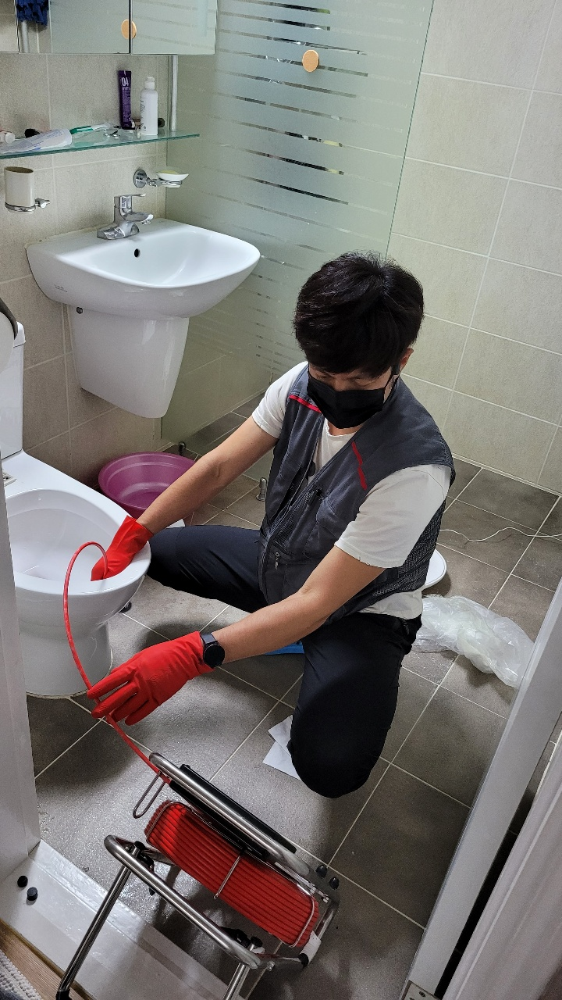
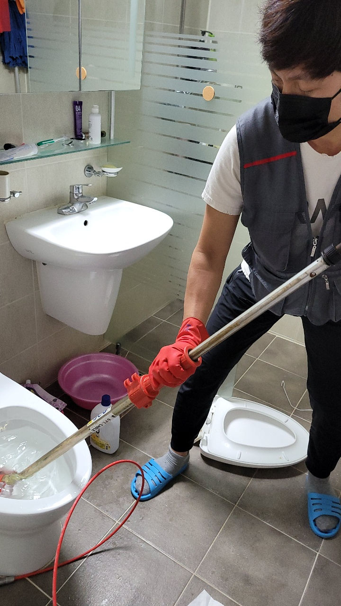
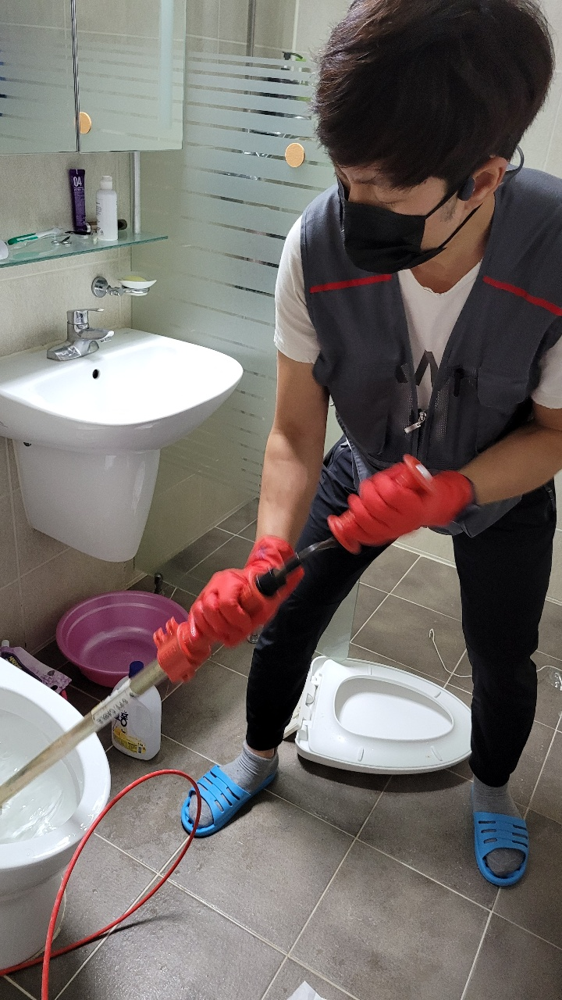
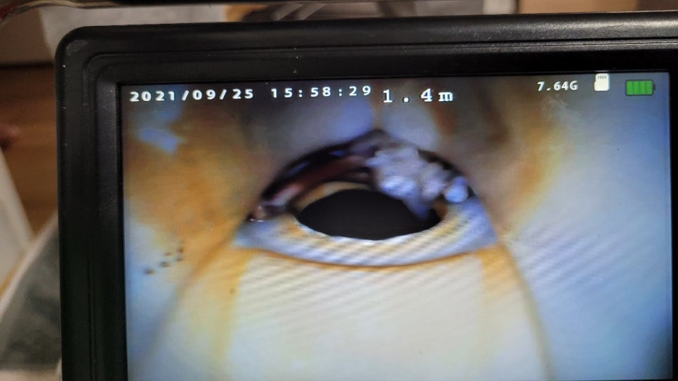

🏠 곡반정동 권선동 변기막힘 권선구 변기뚫기
서울 곡반정동 변기막힘 전문 시공 후기

📋 작업 개요
- 위치: 서울 곡반정동, 곡반정동, 서울
- 서비스 유형: 변기막힘, 하수구막힘, 뚫는업체
- 작업 일시: 2021. 9. 25. 20:41
- 업체명: 하수구수사대 (010-5615-2118)
🔍 문제 상황
곡반정동 권선동 변기막힘 권선구 변기뚫기
안녕하세요
하수구수사대 인사드립니다.
오늘은 권선구에 아파트 변기막힘해결을
위해 하수구수사대기 출동하였습니다.
도착해서 변기물을 내려보니 아주조금씩 내려갈뿐
물이 차오르는 증상이였습니다.
고객님께 이물질이 들어갔는지 여쭤보니
며칠전에 치킨뼈를 버리면서 막힘증상이 있었답니다.
그럴때마다 스스로 해결했지만 이번에는
도저히 뚫리지도 않고 원인을 해결하기 위해
저희 하수구수사대에게 연락을 주셨습니다.

🔎 원인 분석
💡 전문가 진단: 하수구수사대010-2340-2118서울/경기/인천 전지역
하수구수사대
010-2340-2118
서울/경기/인천 전지역
우선 내시경으로 변기막힘 원인을 보기위해
내시경카메라를 투입시켰습니다.
카메라로 보아하니 오물이 나가야하는 구멍을
휴지가 꽉!!!막고 있는것이 보이네요.
아무리도 이물질이 구멍을 막고 휴지가 통과하지 못하여
뭉쳐있는 모양입니다.
우선 관통기로 통수를 시킨후 다시 내시경 카메라로
보기로 하였습니다.
변기막힘은 대부분 스스로 해결이 될때가 많아
고객님들께서 철물점에서 파는 장비로 뚫리는 경우가 많은데요

🔧 작업 과정
간혹 이처럼 이물질이 깊게 걸려있는경우는
보통 힘든경우가 많습니다.
관통기로 휴지를 내려보내고 일단 물이 내려가는데
내시경 카메라로 보아하니 치킨뼈가 오물이 나가는 구멍옆에
끼어 있는것이 보입니다.
이렇게되면 휴지가 뼈에 걸리고 조금씩 쌓이다보면
물이 시원하게 나가지 못하고 결국 막히게 되므로
뼈를 제거하는것이 최선의 방법입니다.
변기를 뜯어서 뼈를 빼고 다시 제자리에 재설치하는
작업도 있지만 최대한 변기를 뜯지않고
하기위해 석션작업을 선택하였습니다.
뼈조각이 아무래도 얇다보니 쉽게 나오지않아
내시경으로 보면서 관통기와 석션콜라보? 작업으로
해결한 현장입니다^^
뼈조각을 완벽하게 제거하였습니다.
고객님께서도 뜯지않고 해결을 해서 비용적으로
시간적으로 아주 만족해 하셨습니다^^
마지막으로 휴지를 3차례 넣어 정상적으로
작동하는지 테스트를 해주었습니다.
역시나 시원하게 내려가네요^^


✅ 작업 완료
변기막힘이 반복적으로 일어난다면 이물질이 들어있을
확률이 높으니 내시경카메라가 원인을 찾는것이 중요합니다.
하수구수사대는
서울,경기,인천 전지역 출장가능하오니
언제든지 연락주십시요^^




⚠️ 하수구 배관 막힘 예방 및 관리 가이드
- ✅ 머리카락, 비닐, 물티슈 등 물에 분해되지 않는 이물질은 하수구 유입을 절대 금지해 주세요.
- ✅ 하수구 거름망을 씌우고 모여진 이물질은 주기적으로 쓰레기통에 바로 비워주셔야 합니다.
- ✅ 배관 노후가 심할 경우 이물질이 더 쉽게 걸리므로 주기적인 배관 세척(고압세척 등)을 권장합니다.
- ✅ 작업 후 1년 이내 재발 시 하수구수사대에서 무상 A/S 보증 서비스를 제공합니다.
💡 핵심 정리
- 확실한 장비 작업(내시경 점검 및 샤프트 스케일링)으로 원인을 뿌리 뽑습니다.
- 작업 후 1년 이내에 동일한 부위 재발 시 100% 무상 A/S 서비스를 보장합니다.
- 서울 · 경기 · 인천 전 지역에 24시간 언제든 긴급 출동할 수 있도록 항시 대기 중입니다.
❓ 자주 묻는 질문 (FAQ)
🚨 서울 곡반정동 변기막힘 문제로 고민이신가요?
정확한 원인 진단과 확실한 시공으로 재발 없는 해결을 약속드립니다.
24시간 긴급 출동 | 서울 · 경기 · 인천 전지역 | 1년 내 재발 시 무상 A/S